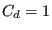

A preswirl nozzle is a special kind of static orifice (Figure
88), used to impart a tangential velocity to gas before it
enters a rotating device. That way, the loss due to the difference in
circumferential velocity between the air entering the rotating device and the
rotating device itself can be decreased. In the Figure
 is the
rotational velocity of the orifice the preswirl nozzle is serving,
 is the absolute velocity of the air leaving the preswirl nozzle and
is the absolute velocity of the air leaving the preswirl nozzle and
 is its velocity as seen by an observer rotating with the orifice (the
so-called relative velocity). The velocity entering the calculation of the discharge
coefficient of the rotating orifice is the tangential component
is its velocity as seen by an observer rotating with the orifice (the
so-called relative velocity). The velocity entering the calculation of the discharge
coefficient of the rotating orifice is the tangential component  of the
velocity of the rotating device as seen by the air leaving the preswirl nozzle
(which is
of the
velocity of the rotating device as seen by the air leaving the preswirl nozzle
(which is
 ). This velocity can be modified by a
multiplicative factor
). This velocity can be modified by a
multiplicative factor  .
.
The geometry of a preswirl nozzle can be quite complicated and the discharge coefficient should be ideally determined by experiments on the actual device. The basic equations are the same as for the orifice.
The discharge coefficients provided by CalculiX are merely a rough estimate and are based on [39]. For this purpose the preswirl nozzle must be described by the following constants (to be specified in that order on the line beneath the *FLUID SECTION, TYPE=PRESWIRL NOZZLE card):
The angle at the exit of the nozzle is used to determine the circumferential
velocity of the gas leaving the nozzle. This is stored for use in the (rotating)
device following the nozzle. The curve number can be used to distinguish
between several measured curves. Right now, only one curve is coded (number =
0 to select this curve). More specific
curves can be implemented by the user, the appropriate routine to do so is
cd_preswirlnozzle.f. Alternatively, the user can enter an own curve in the input
deck listing  versus
versus
 . In
that case the input reads
. In
that case the input reads
Example files: moehring, vortex1, vortex2, vortex3.